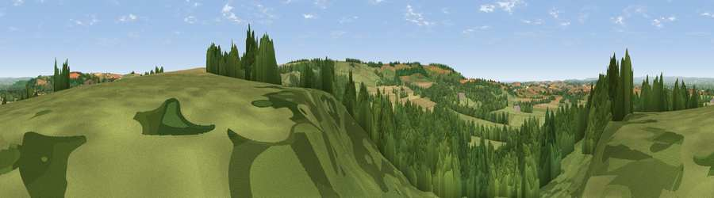

Viewpoint near Birdsall
#10107 in England · top 12% of its area beats it · near BirdsallWhere it is
The exact computed spot (SE 83175 66125). Click the marker for map links.
The view, rendered

A 360° render of this exact spot computed from the terrain model, tree cover and land cover — summer colours, afternoon light, calibrated against photographs of famous viewpoints. Real trees, hedges and buildings will differ in detail.
The panorama
Grey silhouette: terrain skyline in each direction (720 bearings, Earth curvature and refraction included). Dashed green: skyline with trees (+15 m) and buildings (+8 m) as obstacles. Blue strip: how far the ground is visible on each bearing.
Where the view opens
Wedge length = distance to the farthest visible ground on that bearing (vegetation-aware). Rings at 10, 25 and 50 km.
What fills the view
45% woodland · 33% grassland · 21% cropland
Angular shares of the visible panorama (visual magnitude), not map area. Landscape diversity 0.47 (0–1 Shannon).
Key numbers
More beautiful places nearby
The staircase of upgrades: each row has a higher view potential than everything closer. Driving times are estimates from straight-line distance, calibrated against real road routing — check an actual route before setting out.
| Place | Direction | Drive | Score |
|---|---|---|---|
| Viewpoint near North Grimston | NE · 4 km | ~8 min | 64.3 |
| Viewpoint near Birdsall | SW · 4 km | ~8 min | 71.8 |
| Viewpoint near Leavening | SW · 5 km | ~12 min | 73.7 |
| Viewpoint near Acklam | SSW · 6 km | ~13 min | 73.8 |
| Viewpoint near Ampleforth | WNW · 27 km | ~43 min | 76.6 |
| Seamer Beacon | NE · 28 km | ~44 min | 76.9 |
| Olivers Mount | NE · 29 km | ~46 min | 80.3 |
| Viewpoint near Thirlby | WNW · 37 km | ~55 min | 81.5 |
54.08433, -0.73004 · source: screening · position refined by local search. Computed location — check access rights before visiting.